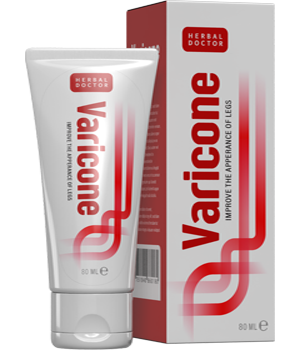

Добър ден. Днес искам да поговорим за варикозно разширените вени. Тъй като, към мен се обръщат предимно жени с молба за помощ да се прикрие варикозната мрежа по краката. Темата за варикозата ми стана много интересна и реших да получа максимум информация за този проблем. Най-много бях поразена от мащаба му.Скорошните изследвания на Единбурския Университет показаха, че над 67% от жените в Европейския съюз страдат от разширени вени.
Когато разбрах за тази цифра, бях шокирана! Над половината жени в Европа - това вече прилича на истинска епидемия.
Кой е по-предразположен към варикозата?
Варикозата основно се среща при жените. Но, през последните години, този недъг започва да засяга и мъжете. Данните не включват мъжете, които са спортисти и са предразположени към разширени вени. Колко мъже страдат от варикоза? Около 24%!
Ана Харт - Експерт - козметолог
Сред най-критичните фактори за проявата на варикозата се счита “правостоящата” работа, излишното тегло и заседналият начин на живот.
Симптоми на варикозата
Най-добрата стратегия е навреме да се разпознае и да се действа. Реших да проведа изследване за най-изразените и разпространени симптоми на варикозно разширените вени. Поговорих с няколко съдови специалисти и пуснах анкета.
Най-честите симптоми, освен външните прояви се оказаха:
- - боцкане
- - крампи
- - пулсираща или пареща болка в крайниците
- - мускулни спазми
Личен опит
Много често жените обръщат внимание на здравето на краката си само тогава, когато вените на краката са вече в плачевно състояние. Те мислят, че симптомите, като спазми и крампи се дължат просто на умора след напрегнат ден.
Още един голям проблем е, че жените не разбират изцяло до колко е сериозна ситуацията. Ако се появи варикозна мрежа на краката, те обличат панталони. Така те прикриват този козметичен недостатък, забравяйки за сериозните последици от варикозата.
Варикозата - това не са просто грозни вени, сини черти и мрежа по краката. Не трябва да се затварят очите за този проблем. Ако се запусне варикозата, това ще се отрази болезнено не само на краката, но и на целия организъм. Нещата могат да стигнат дори до тромбоза.
Новото средство против варикоза
Аз имах удоволствието да говоря с жена, която попълваше анкетата ми за проблемите с варикозата. Тя ми разказа, че е взела участие в тестването на ново средство против варикоза - .
Кремът се е оказал супер ефективен. Преминават болките и спазмите в краката и, а в края на тестването минават отоците на вените. Изчезват както външните, така и вътрешните прояви на варикозата.
Тя подписва споразумение за поверителност и затова успя да ми разкаже тази история едва два месеца след тестването.
Новият продукт се оказа по-ефективен от популярните марки
| Изследване на Единбургския Университет: |

Venoruton |

|
| Едновременен ефект | Облекчава болката | Облекчава болката и отоците |
| Странични ефекти | Дразнене, алергия, сърбеж | Никакви странични ефекти |
| Противопоказания | Повишена чувствителност към съставките в препарата | Няма противопоказания |
| Начин на въздействие | Успокоява дразненето | Тонизира и пречиства стените на кръвоносните съдове |
| Дългосрочен ефект | Против отоци и обезболяващ | Подобрява кръвообращението |
Кремът въздейства тотално, а не просто премахва болката, както повечето конкурентни продукти. Той спомага за премахване на самата причина за варикозните вени.
Помогнал е на хиляди жени в цяла Европа. Кремът е отлична алтернатива на скъпоструващите хирургични процедури.
В заключение ми се иска да кажа, че не трябва да отлагате, ако имате един или няколко симптома от този списък. Варикозата е сериозен проблем.
Мария Славова
Posted 8 hours ago
Сестра ми беше така. Когато и се появи мрежата от вени, тя реши просто да я замаскира, а не я лекува, както и бях казала. А когато започнаха отоците и болките в краката, тогава вече започна да се замисля. Носеше специални чорапогащници и опита всякакви мазила. Но и помогна именно . Сега тича, както когато беше млада! Краката и са здрави и красиви! Никакви варикозни звезди! Крака, като на модел!
Анастасия Георгиева
Posted 9 hours ago
Напишете, моля, колко време е използвала крема ? Аз имам силна варикоза на краката. Купих си специални таблетки за вени. Пия ги една седмица и не съм забелязала да помагат, вените на краката ми са все така сини. Краката ме болят по-малко и отока, сякаш, намаля, но чак да ми мине - не. Нямам финансовата възможност за операция. И да попитам, също, на какъв стадий на варикозата може да се маже ? От симптомите имам бодежи и отоци, спазми и подуване на вените. Благодаря за отговора.
Анастасия Георгиева
Posted 9 hours ago
Добър ден, Анастасия! Сестра ми каза, че крема много бързо облекчава болката. Отоците ги сваля постепенно, най-важно е да се ползва редовно. За стадия, на който може да се използва крема не знам. Вижте в сайта, ето ви линк. Ние точно от тук поръчахме . Не се съмнявайте, крема е много добър. Силно го препоръчвам. Той дори и без таблетки трябва да ви помогне.
Ваня Григорова
Posted 10 hours ago
Да! е много добър крем! Аз самата до скоро се чудех как да се справя с варикозата. Много ме боляха краката и вените ми бяха станали огромни. Мислех да се обърна към съдов хирург за операция. А мъжът ми намери от някъде този крем и предложи отначало да използваме него. Нямах какво да губя. Всичко мина без операция! Кремът помогна! Аз дори отначало не повярвах. Страх ме беше, че вените пак ще се подуят и краката ще ме болят. Но не! Всичко е наред!